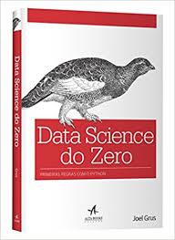

Data Science do Zero
Um livro bem legal

Organizando um projeto a partir dos exemplos contidos no livro Data Science do Zero.
Dando continuidade
Está publicado o segundo texto sobre esse livro.
Um interesse
Sou um quase matemático (abandonei os estudos no último ano), que ama programar. Após abandonar a faculdade de Matemática, estabeleci-me como um profissional de TI, mas sempre dando uma olhadinha nas coisas específicas à matemática, com um ar saudosista. Recentemente decidi que essa é uma meta maior em minha vida, unir programação e matemática.
Mas os conhecimentos de matemática eu perdi, por isso precisava encontrar um caminho para recomeçar. O que voltar a estudar? E assim achei esse livro, Data Science do Zero, no Brasil editado pela Alta Books.
O autor, Joel Grus, se propõe a apresentar, de maneira mais rasa, os algoritmos e instrumental matemático básicos necessários à entrada no mundo do data science. E isso não é ruim, pois é uma primeira abordagem, com mãos na massa, que permite aprofundar os conhecimentos necessários numa segunda etapa.
Empacado
Comecei a ler o livro, que tem um capítulo dedicado a introduzir a linguagem Python, que me foi bem útil também. É sempre bom rever os fundamentos!
Mas a cada exemplo dado no livro, eu empacava tentando chegar aos resultados apresentados de outra forma. Isso me rendeu algumas boas experiências, mas não me permitiu seguir em frente...
Foi aí que decidi escrever uma "classinha" e uns "téstinhos".
Disso para a ideia de registrar e compartilhar meus progressos nessa empreitada, foi rapidinho.
Ampliando horizontes
Mas estou estudando outros dois livros de Python, que estão sendo úteis nessa caminhada. O primeiro, é do Luciano Ramalho, o Python Fluente, e o outro é Aprendendo padrões de projeto em Python, de Chetan Giridhar.
Eu aprendo efetivamente se me dedico a algo prático, então pensei que poderia ampliar meus conhecimentos nessas três frentes, ao mesmo tempo, servindo ao meu objetivo maior de conhecer data science.
O projeto
O projeto está no meu GitHub, e vou usar tags para cada novo texto que eu publicar. Para esse texto, a tag será 001_beginning.
Para os testes, decidi que o melhor era pegar os dados apresentados no livro como fixtures, e usar os exemplos como casos de teste. Se eu chegar aos mesmos resultados do livro, minha implementação está correta, em relação às respostas.
Classe User
Nesse começo, temos uma classe User, responsável por armazenar os usuários e seus relacionamentos de amizade (mudaremos isso? aguardem!):
from collections import UserList
class User(UserList):
"""Users data store."""
def __init__(self, *args):
"""Init data with args or with a empty list."""
if args is not None:
self.data = list(args)
else:
self.data = list()
self.friendships = list()
def make_friend(self, user, friend):
"""Register a new friendship."""
self.friendships.append({'user': user, 'friend': friend})
self.friendships.append({'user': friend, 'friend': user})
def friends(self, user_id):
"""Returns a friends list for a given user."""
return [x[1] for x in self.friendships if x[0] == user_id]
A função make_friend registra as amizades da rede social. Se eu sou amigo de alguém, esse alguém é amigo meu. Por isso o registro duplo, para facilitar as pesquisas. E a friends retorna uma lista com os ids dos amigos.
E na função __init__ temos um código necessário pra uma boa implementação da herança de collections.UserList. Descobri essa maravilha a partir do Ramalho, lendo sobre UserDict. Com ela, ao invés de codificar uma classe que contenha a lista e me preocupar com o gerenciamento dos elementos, apenas herdo e construo as funcionalidades adicionais.
Fixtures
Estou usando para os testes os dados apresentados no livro. Em fixtures/ temos dois arquivos em JSON: user.json para os usuários e friendship.json para as relações de amizade.
Para carregá-los, uso a biblioteca padrão json do Python.
Testes
Eles dependem das fixtures abordadas agora há pouco.
Há, no diretório tests/, o arquivo helper_test.py, responsável por carregar as fixtures:
import json
class Fixtures:
def read_json_file(cls, filename):
with open(filename) as fp:
return json.load(fp)
def __new__(cls):
if not hasattr(cls, 'instance'):
cls.instance = super().__new__(cls)
return cls.instance
def __init__(self):
if not hasattr(self, 'users'):
self.users = self.read_json_file('fixtures/user.json')
if not hasattr(self, 'friendships'):
self.friendships = self.read_json_file(
'fixtures/friendship.json'
)
Aqui, seguindo o que aprendi no livro de patterns, criei uma classe do tipo singleton. Dessa forma, os arquivos são lidos uma única vez, e uma única instância da classe Fixtures é criada. Vamos economizar recursos!
Para executá-los, basta um:
python3 -m unittest tests/test_*.py
Concluindo
Esse projeto, agora, reflete as primeiras páginas do livro, com as primeiras informações que nosso personagem, um cientista de dados em seu primeiro dia de trabalho, recebe. Mais problemas virão, e nosso herói irá resolvê-los, e nós seguiremos aprendendo.